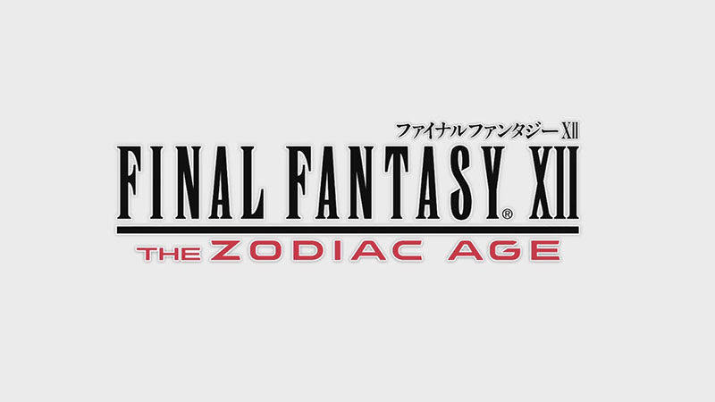
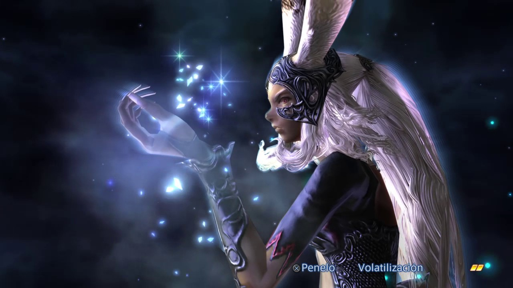

Main Characters
Vaan
One of these days I'll fly an airship of my own. I'll be a sky pirate, free to go where I will.
- Vaan
Vaan is the main protagonist of Final Fantasy XII and Final Fantasy XII: Revenant Wings. He is also a secret playable character in Final Fantasy Tactics A2: Grimoire of the Rift and appears in Dissidia 012 Final Fantasy representing Final Fantasy XII.
An orphan street thief hailing from Rabanastre in the Kingdom of Dalmasca, Vaan begrudges the Archadian Empire for the death of his brother, Reks, and the subjugation of his homeland. He dreams of owning an airship and being a sky pirate free to travel Ivalice. When his attempt to steal from the Royal Palace of Rabanastre goes awry, he becomes entangled in a conflict that could decide the fate of Dalmasca.
Balthier
Princess! No need to worry. I hope you haven't forgotten my role in this little story. I'm the leading man. You know what they say about the leading man? He never dies.
- Balthier to Ashe
Balthier, real name Ffamran mied Bunansa,is a playable character in Final Fantasy XII and Final Fantasy XII: Revenant Wings. He is a sky pirate who globetrots Ivalice on his airship, the Strahl, with his partner Fran. During an attempt to steal from the Royal Palace of Rabanastre, Balthier encounters Vaan robbing the palace treasury. When his plan goes awry Balthier finds himself a part of a conflict between political forces that could lead to war.
Balthier is six feet tall and has short brown hair with blond highlights, sharply styled sideburns, and green eyes. He wears an embroidered golden and olive vest over a high-collared shirt and tight black leather trousers with leather shin pads, and steel, open-backed sandals. He wears two crossed, gold-buckled belts with two pouches attached to either side and a collection of brightly colored rings and bracelets on his left hand, and has a set of earrings in both ears. In his official render for Final Fantasy XII, Balthier holds the Betelgeuse. Artwork and renders of Balthier for several spin-off appearances depict him with this gun.
Fran

Fran is a playable character in Final Fantasy XII and Final Fantasy XII: Revenant Wings. She is a viera and is Balthier's partner aboard his airship, the Strahl. Fran is the only non-hume character in the main cast. Her title is "Master of Weapons", as the viera are known for their extraordinary craftsmanship, grace, and intellect.
Fran is a viera and thus has their dark skin, thick, white hair and long claw-like fingernails. Fran's eyelashes are black despite her white hair, ears and eyebrows. Her long, leporine ears are covered in white fur with speckles of brown fur at the tips. She has red eyes, a trait not uncommon to her race. She keeps her waist-long hair in a ponytail and leave the shorter pieces to frame her face. Because of the way viera's feet are structured, Fran must walk wearing stilettos. Fran is the tallest playable character in Final Fantasy XII, and her viera ears make her seem even taller.
Ashe
Ashelia B'nargin Dalmasca, otherwise known as Ashe and by the alias Amalia, is a playable character in Final Fantasy XII and Final Fantasy XII: Revenant Wings. She is the former Princess of Dalmasca and the only daughter of King Raminas. She is the last true descendant of King Raithwall, the Dynast King. She also appears in the manga version of Final Fantasy XII that delves more into her background.
While Vaan is the game's designated protagonist, the bulk of the party's actions in Final Fantasy XII hinge on Ashe, and the main story is her drive to accumulate the power she needs to avenge her kingdom.
Basch

If I could protect but one person from war's horror... then I would bear any shame. I would bear it proudly.
- Basch fon Ronsenburg
Basch fon Ronsenburg is a playable character in Final Fantasy XII and Final Fantasy XII: Revenant Wings. A disgraced knight, Basch had his name ruined throughout Ivalice when he was prosecuted for murdering King Raminas, contributing to the Kingdom of Dalmasca's downfall. His background is expanded upon in the manga version.
Basch is a 36-year-old man with a strong, muscular-though-emaciated build, a tall frame, and blue eyes. He has long blond slicked back hair, beard and goatee. When first met, his facial hair is wildly overgrown, but after joining the party it is trimmed down. Basch has a long scar across his left brow.
Penelo
I'll be going too, of course. Every good sky pirate needs a partner, right?
- Penelo
Penelo is a playable character in Final Fantasy XII and Final Fantasy XII: Revenant Wings. She is Vaan's childhood friend and dreams of being a dancer, and has learned martial arts from her elder brothers. Following an encounter with a sky pirate and the misunderstanding it causes, Penelo becomes involved in a world-scale conflict that could determine the fate of Ivalice. She also makes a cameo playable appearance in Final Fantasy Tactics A2: Grimoire of the Rift.
Penelo is an athletic young girl, with honey eyes and blonde hair tied in pigtails with a short fringe and two long side bangs. She wears a gold-and-cornflower blue slim outfit with short white lacy sleeves and bronze wing-like armlets. She wears bronze bangles and gold-and-cornflower blue knee-high boots.